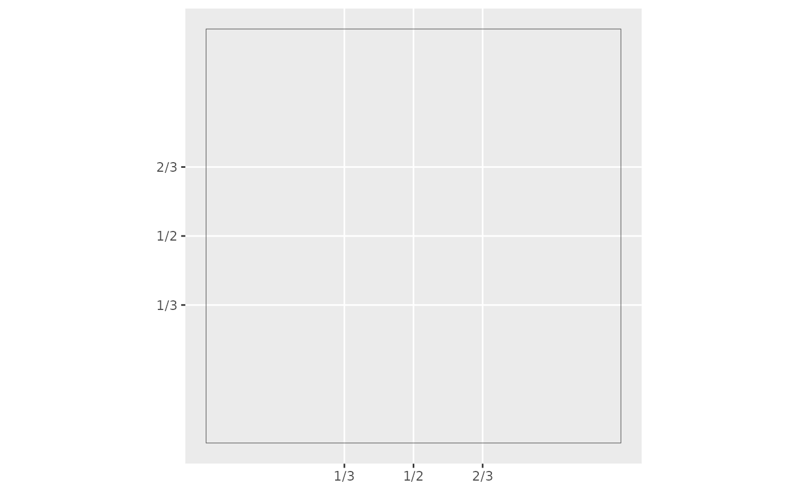
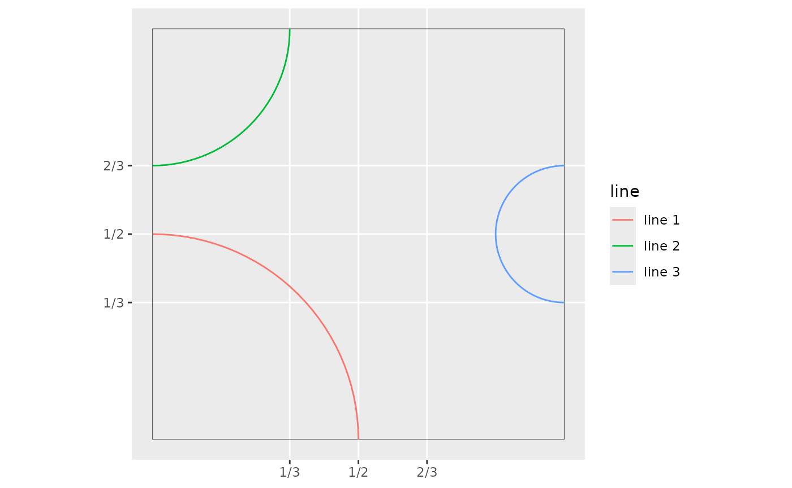
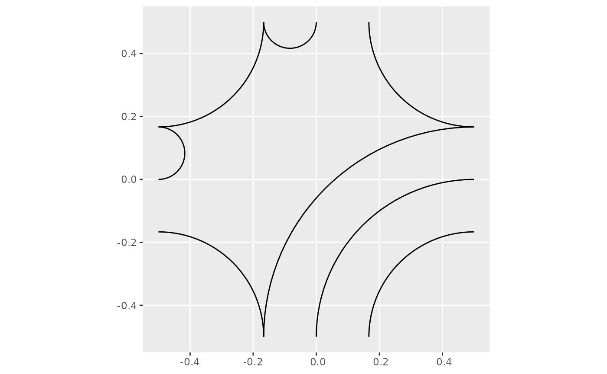
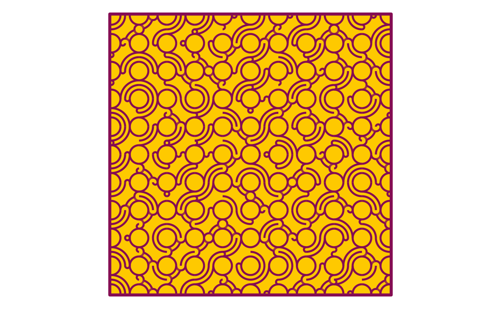

Boutique collection
Source:vignettes/articles/a05-boutique-collection.Rmd
a05-boutique-collection.RmdLoad packages used in this article:
Truchet tiles are incredibly flexible.
The Boutique collection of tiles is a set of tiles designed on the following template:
## CREATE BASE TILE
# Define square polygon
tile <- matrix(c(0, 0,
0, 1,
1, 1,
1, 0,
0, 0),
ncol = 2,
byrow = TRUE)
# Convert coordinates to polygons and then to simple features
tile <- data.frame(geometry = sf::st_polygon(list(tile)) %>%
sf::st_sfc()) %>%
sf::st_as_sf()
ggplot() +
geom_sf(data = tile,
fill = NA) +
scale_x_continuous(breaks = c(1/3, 1/2, 2/3),
labels = c("1/3", "1/2", "2/3")) +
scale_y_continuous(breaks = c(1/3, 1/2, 2/3),
labels = c("1/3", "1/2", "2/3"))
Each side of a tile has three support points at , , and of its length. These support points can be connected by circle segments. For example:
# Create a set points at subset of support locations on the edges of tile
pts <- data.frame(x = c(0, 0, 1),
y = c(0, 1, 1/2))
# Convert coordinates to points and then to simple features
pts <- pts %>%
sf::st_as_sf(coords = c("x", "y"))
# Assign constant geometry
sf::st_agr(pts) <- "constant"
line_1 <- pts[1,] %>%
# Use point(s) to create circle(s) with `st_buffer()` and radius `r`
mutate(r = 1/2,
geometry = pts[1,] %>%
st_buffer(dist = r) %>%
dplyr::pull(geometry)) %>%
sf::st_set_agr("constant") %>%
# Cast to LINESTRING
sf::st_cast(to = "LINESTRING") %>%
dplyr::select(-r) %>%
# Intersect with tile
st_intersection(tile)
line_2 <- pts[2,] %>%
# Use point(s) to create circle(s) with `st_buffer()` and radius `r`
mutate(r = 1/3,
geometry = pts[2,] %>%
st_buffer(dist = r) %>%
dplyr::pull(geometry)) %>%
sf::st_set_agr("constant") %>%
# Cast to LINESTRING
sf::st_cast(to = "LINESTRING") %>%
dplyr::select(-r) %>%
# Intersect with tile
st_intersection(tile)
line_3 <- pts[3,] %>%
# Use point(s) to create circle(s) with `st_buffer()` and radius `r`
mutate(r = 1/6,
geometry = pts[3,] %>%
st_buffer(dist = r) %>%
dplyr::pull(geometry)) %>%
sf::st_set_agr("constant") %>%
# Cast to LINESTRING
sf::st_cast(to = "LINESTRING") %>%
dplyr::select(-r) %>%
# Intersect with tile
st_intersection(tile)
# Bind lines and convert to simple features
boutique_lines <- data.frame(rbind(line_1,
line_2,
line_3),
line = c("line 1",
"line 2",
"line 3")) %>%
st_sf()
# Plot lines in example
ggplot() +
geom_sf(data = tile,
fill = NA) +
geom_sf(data = boutique_lines,
aes(color = line)) +
scale_x_continuous(breaks = c(1/3, 1/2, 2/3),
labels = c("1/3", "1/2", "2/3")) +
scale_y_continuous(breaks = c(1/3, 1/2, 2/3),
labels = c("1/3", "1/2", "2/3"))
Boutique tiles are created by connecting some or all of the support
points with judiciously selected circle segments. A single tile can be
obtained by means of function st_truchet_boutique(). The
arguments are x, the x coordinate of the center of the
tile, y, the y coordinate of the center of the tile, and
the type of the tile in the collection:
st_truchet_boutique(x = 0,
y = 0,
type = "ribbon_1") %>%
ggplot() +
geom_sf()
Currently implemented tiles in this collection are “ribbon”, “paradise”, “silk”, “rainbow”, and “cloud”. Depending on the symmetry of the tile, more than one version of the tile might result from rotations. Examples of tiles in the collection are shown next.
Ribbon
Plot sample ribbon tiles:
# Tiles types
tile_types <- data.frame(tiles = c("ribbon_1", "ribbon_2", "ribbon_3", "ribbon_4")) %>%
mutate(x = c(1, 2.5, 1, 2.5),
y = c(2.5, 2.5, 1, 1))
# Elements for assembling the mosaic
x_c <- tile_types$x
y_c <- tile_types$y
type <- as.character(tile_types$tiles)
pmap_dfr(list(x_c, y_c, type), st_truchet_boutique) %>%
ggplot() +
geom_sf(color = "black",
size = 2) +
geom_text(data = tile_types,
aes(x = x,
y = y,
label = c("ribbon_1", "ribbon_2", "ribbon_3", "ribbon_4")),
nudge_y = 0.6) +
scale_fill_distiller(direction = 1) +
theme_void() +
theme(legend.position = "none")Paradise
Plot sample paradise tiles:
# Tiles types
tile_types <- data.frame(tiles = c("paradise_1", "paradise_2", "paradise_3", "paradise_4")) %>%
mutate(x = c(1, 2.5, 1, 2.5),
y = c(2.5, 2.5, 1, 1))
# Elements for assembling the mosaic
x_c <- tile_types$x
y_c <- tile_types$y
type <- as.character(tile_types$tiles)
pmap_dfr(list(x_c, y_c, type), st_truchet_boutique) %>%
ggplot() +
geom_sf(color = "black",
size = 2) +
geom_text(data = tile_types,
aes(x = x,
y = y,
label = c("paradise_1", "paradise_2", "paradise_3", "paradise_4")),
nudge_y = 0.6) +
scale_fill_distiller(direction = 1) +
theme_void() +
theme(legend.position = "none")Silk
Plot sample silk tiles:
# Tiles types
tile_types <- data.frame(tiles = c("silk_1", "silk_2", "silk_3", "silk_4")) %>%
mutate(x = c(1, 2.5, 1, 2.5),
y = c(2.5, 2.5, 1, 1))
# Elements for assembling the mosaic
x_c <- tile_types$x
y_c <- tile_types$y
type <- as.character(tile_types$tiles)
pmap_dfr(list(x_c, y_c, type), st_truchet_boutique) %>%
ggplot() +
geom_sf(color = "black",
size = 2) +
geom_text(data = tile_types,
aes(x = x,
y = y,
label = c("silk_1", "silk_2", "silk_3", "silk_4")),
nudge_y = 0.6) +
scale_fill_distiller(direction = 1) +
theme_void() +
theme(legend.position = "none")Rainbow
Plot sample rainbow tiles:
# Tiles types
tile_types <- data.frame(tiles = c("rainbow_1", "rainbow_2")) %>%
mutate(x = c(1, 2.5),
y = c(1, 1))
# Elements for assembling the mosaic
x_c <- tile_types$x
y_c <- tile_types$y
type <- as.character(tile_types$tiles)
pmap_dfr(list(x_c, y_c, type), st_truchet_boutique) %>%
ggplot() +
geom_sf(color = "black",
size = 2) +
geom_text(data = tile_types,
aes(x = x,
y = y,
label = c("rainbow_1", "rainbow_2")),
nudge_y = 0.6) +
scale_fill_distiller(direction = 1) +
theme_void() +
theme(legend.position = "none")Cloud
Plot sample cloud tiles:
# Tiles types
tile_types <- data.frame(tiles = c("cloud_1", "cloud_2", "cloud_3", "cloud_4")) %>%
mutate(x = c(1, 2.5, 1, 2.5),
y = c(2.5, 2.5, 1, 1))
# Elements for assembling the mosaic
x_c <- tile_types$x
y_c <- tile_types$y
type <- as.character(tile_types$tiles)
pmap_dfr(list(x_c, y_c, type), st_truchet_boutique) %>%
ggplot() +
geom_sf(color = "black",
size = 2) +
geom_text(data = tile_types,
aes(x = x,
y = y,
label = c("cloud_1", "cloud_2", "cloud_3", "cloud_4")),
nudge_y = 0.6) +
scale_fill_distiller(direction = 1) +
theme_void() +
theme(legend.position = "none")Assembling a mosaic
Function st_truchet_ss() is used to assemble a mosaic
with boutique tiles. It works with pre-set parameters that randomize the
choice of tile and placement, but also accepts a data frame with inputs
for greater control of the mosaic. This is a fully random mosaic with a
selection of four tiles from the collection:
st_truchet_ss(tiles = c("silk_1", "silk_2", "cloud_1", "cloud_2")) %>%
ggplot() +
geom_sf() +
theme_void()Function st_truchet_ss() can take as an input a data
frame with the following columns: “x” with the x coordinates of the
tiles, “y” with the y coordinates of the tiles, and “tiles” with the
types of tiles. The following mosaic uses the silk and ribbon tiles, in
combination with a “container” polygon to provide a backgroud for the
lines in the tiles:
# Limits of mosaic
x_lim <- c(1, 10)
y_lim <- c(1, 10)
# Polygon
container <- matrix(c(x_lim[1] - 0.55, y_lim[1] - 0.55,
x_lim[1] - 0.55, y_lim[2] + 0.55,
x_lim[2] + 0.55, y_lim[2] + 0.55,
x_lim[2] + 0.55, y_lim[1] - 0.55,
x_lim[1] - 0.55, y_lim[1] - 0.55),
ncol = 2,
byrow = TRUE)
# Convert coordinates to polygons and then to simple features
container <- data.frame(geometry = sf::st_polygon(list(container)) %>%
sf::st_sfc()) %>%
sf::st_as_sf()
# Design mosaic
tile_types <- data.frame(expand.grid(x = x_lim[1]:x_lim[2],
y = y_lim[1]:y_lim[2])) %>%
mutate(tiles = sample(c("ribbon_1", "ribbon_2", "ribbon_3", "ribbon_4",
"silk_1", "silk_2", "silk_3", "silk_4"),
size = n(),
replace = TRUE))
# Assemble mosaic and render
st_truchet_ss(df = tile_types) %>%
st_union() %>%
ggplot() +
geom_sf(data = container,
# French plum
color = "#850D52",
# Philippine yellow
fill = "#FEC900",
size = 1.5) +
geom_sf(color = "#850D52",
size = 1) +
theme_void() +
theme(legend.position = "none")